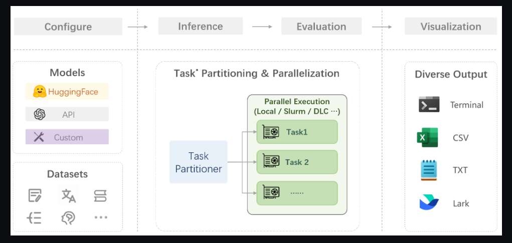

opencompass模型评测
概述
评测流程

在 OpenCompass 中评估一个模型通常包括以下几个阶段：配置 -> 推理 -> 评估 -> 可视化。配置：这是整个工作流的起点。您需要配置整个评估过程，选择要评估的模型和数据集。此外，还可以选择评估策略、计算后端等，并定义显示结果的方式。推理与评估：在这个阶段，OpenCompass 将会开始对模型和数据集进行并行推理和评估。推理阶段主要是让模型从数据集产生输出，而评估阶段则是衡量这些输出与标准答案的匹配程度。这两个过程会被拆分为多个同时运行的“任务”以提高效率，但请注意，如果计算资源有限，这种策略可能会使评测变得更慢。可视化：评估完成后，OpenCompass 将结果整理成易读的表格，并将其保存为 CSV 和 TXT 文件。你也可以激活飞书状态上报功能，此后可以在飞书客户端中及时获得评测状态报告。
准备
环境
conda环境同Xtuner
git clone https://github.com/open-compass/opencompass
cd opencompass
pip install -e .
数据
# 解压评测数据集到 data/ 处
cp /share/temp/datasets/OpenCompassData-core-20231110.zip /root/opencompass/
unzip OpenCompassData-core-20231110.zip
# 将会在opencompass下看到data文件夹
查看支持的数据集、模型
# 列出所有跟 internlm 及 ceval 相关的配置
python tools/list_configs.py internlm ceval
评测
python run.py --datasets ceval_gen --hf-path /share/temp/model_repos/internlm-chat-7b/ --tokenizer-path /share/temp/model_repos/internlm-chat-7b/ --tokenizer-kwargs padding_side='left' truncation='left' trust_remote_code=True --model-kwargs trust_remote_code=True device_map='auto' --max-seq-len 2048 --max-out-len 16 --batch-size 4 --num-gpus 1 --debug
命令解析
--datasets ceval_gen \
--hf-path /share/temp/model_repos/internlm-chat-7b/ \ # HuggingFace 模型路径
--tokenizer-path /share/temp/model_repos/internlm-chat-7b/ \ # HuggingFace tokenizer 路径（如果与模型路径相同，可以省略）
--tokenizer-kwargs padding_side='left' truncation='left' trust_remote_code=True \ # 构建 tokenizer 的参数
--model-kwargs device_map='auto' trust_remote_code=True \ # 构建模型的参数
--max-seq-len 2048 \ # 模型可以接受的最大序列长度
--max-out-len 16 \ # 生成的最大 token 数
--batch-size 2 \ # 批量大小
--num-gpus 1 # 运行模型所需的 GPU 数量
--debug
如果一切正常，您应该看到屏幕上显示 “Starting inference process”：
作业
基础作业（）
- 使用 OpenCompass 评测 InternLM2-Chat-7B 模型在 C-Eval 数据集上的性能
1、评测中

2、评测完成